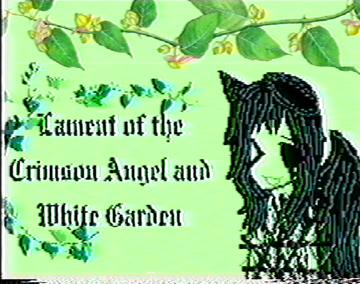
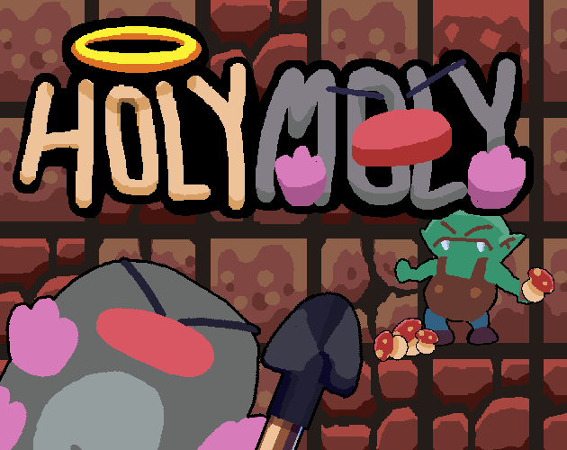
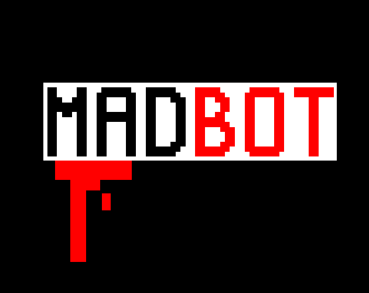
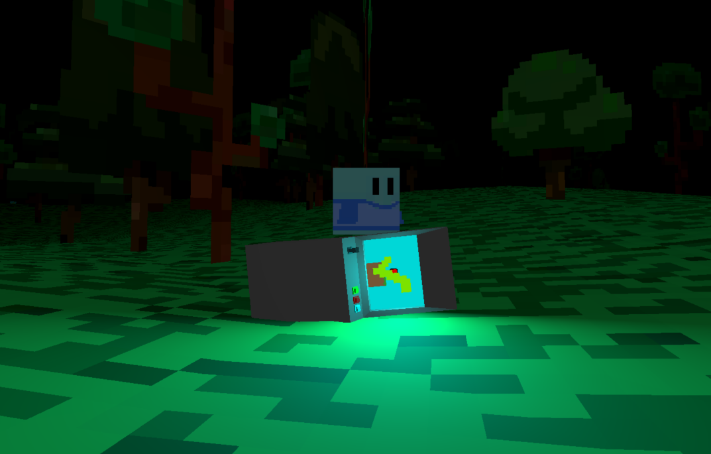
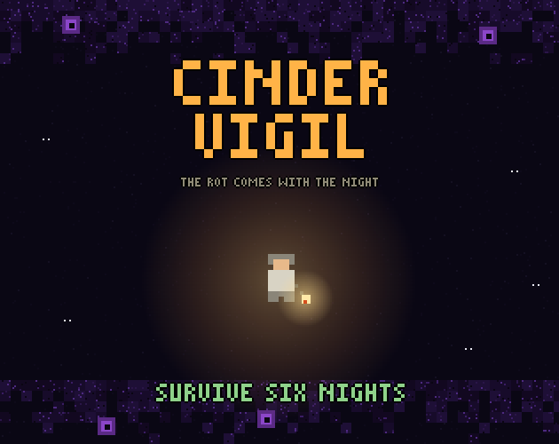
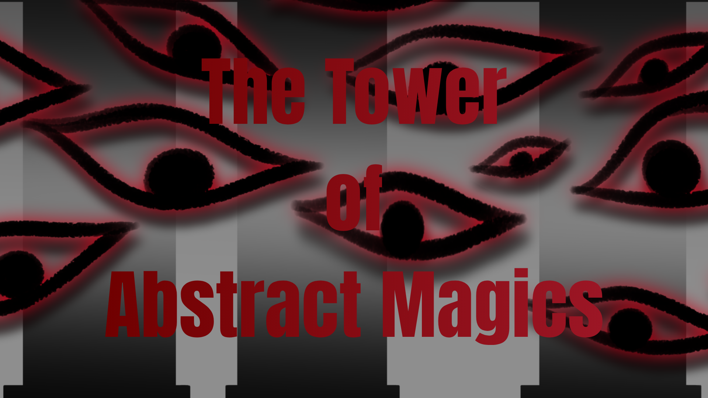
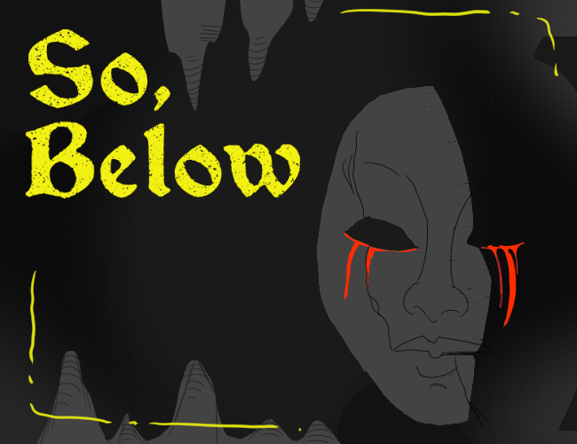
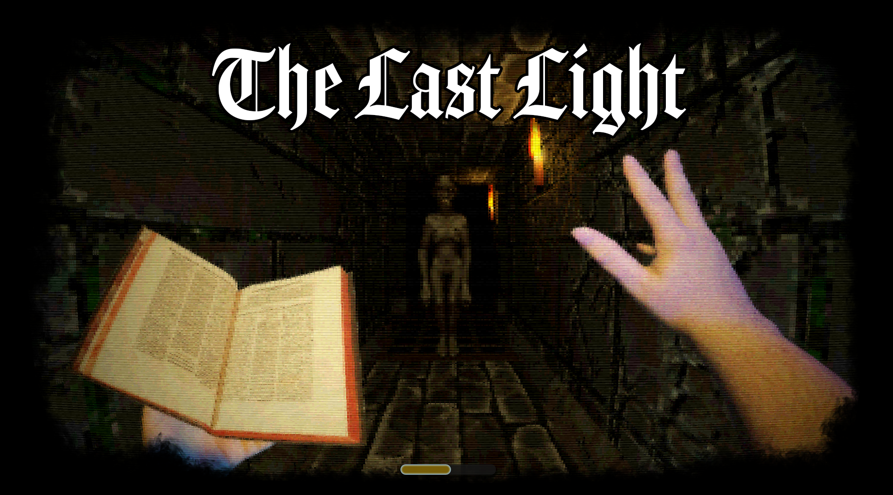

.png)
.png)
Pixel Forge Jam #2: Haunted Edition is officially complete, and we are thrilled to celebrate the games that rose to the top. The jam received 111 entries and 1,259 ratings, with creators building, playing, and supporting one another throughout the event.
Thank you to everyone who submitted a game, rated entries, shared feedback, or joined the community. The quality and variety of the Haunted Edition submissions made these results worth celebrating.
Play the games: Every winner card below links directly to its official itch.io page. Visit the games, leave the creators some support, and experience the projects for yourself.
Our Top Five Winners

1st Place: Lament of the Crimson Angel and White Garden
By JakeKleiner. Ranked first overall with 17 ratings and a score of 3.471, while also placing first for atmosphere.

2nd Place: Holy Moly
By BryanCodes, quantumvortex18, javis, and GeorgeCodes. Ranked second overall with 21 ratings and a score of 3.448, taking first place for both gameplay and music.

3rd Place: MadBot
By pixcarex. Ranked third overall with 11 ratings and a score of 3.291, earning first place in the horror category.

4th Place: Escape The Corrupted Forest
By REEE101. Ranked fourth overall with 21 ratings and a score of 3.238, with especially strong horror and atmosphere results.

5th Place: Cinder Vigil
By Juk Games. Ranked fifth overall with 20 ratings and a score of 3.180, placing third for use of the theme.
Judges' Favorite Picks
Alongside the ranked top five, the Pixel Forge Jam organizers selected three additional games for special recognition.

1st Judges' Pick: The tower of abstract magics
By ASecondGuy, Ancyyy, and Anomalocaris_Games.

2nd Judges' Pick: So, Below
By Geatz, KamenCrafter, MagicMan077, and Guss219.

3rd Judges' Pick: The Last Light
By BreakfastLlamaStudios.
Thank You, Creators
Even if your game is not listed here, thank you for helping make Haunted Edition special. Every submission represents a finished idea, a new skill learned, or a creative risk taken.
Game jams are not only about winning. They are about learning, experimenting, finishing something, and sharing it with other creators. We are proud of everyone who took part.
See all entries and the complete rankings on the official Pixel Forge Jam #2 results page.